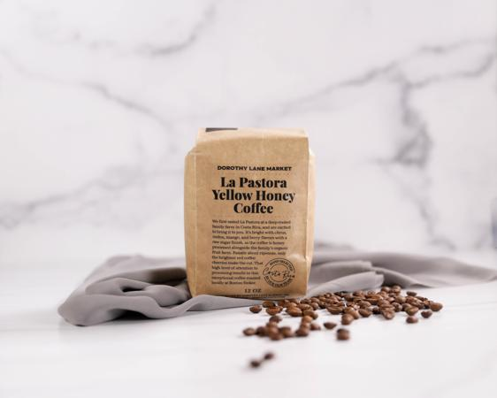
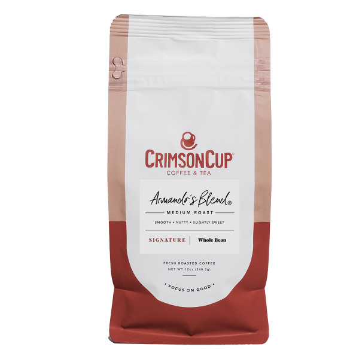

The Magical World of Beans
Where do we even begin?
Coffee beans weren't originally discovered by humans, in fact, it was the curiosity of the humble goat that found the potent energy of the coffee bean. A Goat Herder by the name of Kaldi in the lands of Kaffa back in the 9th Century is who you should thank. The story goes that Kaldi witnessed his goats acting crazy after eating on these weird red and green "berries". He brought them over to the Monastary closest to him where the priest thought of them as evil and threw them into a nearby fire to burn. The aroma that came from the fire after prompted monks to quickly rush over and realize maybe there was something to this berries after all.
Some things age well
Flash forward hundreds of years later and there's a building that sells some kind of coffee on every corner.The potent bean has become such a staple in our society that people will often look at you as crazy if you DON'T drink any coffee. With so many roasts, companies, and brewing methods, it can all get confusing quick. That's why I've made this easy to follow guide to get you educated and caught up on what all the fuss is about of this once colorful "Berry".
If you didn't know by now, beans are roasted, and how long they are roasted for is one factor in flavor and boldness.
Light Roast
My personal favorite, the light roast is the most caffinated of all the roasts. Coffee beans are roasted at a temperature between 350-410 degrees. Beans will make a "popping" noise known as the "first crack", this lets roasters know when light roasts are done. Since it is roasted for a shorter amount of time, it retains more caffiene. The beans are generally lightbrown in color.
My pick for best Light Roast goes to: La Pastora Yellow Honey

Medium Roast
Medium roast is the nice inbetween if you need something a little bold but also a little fruity and acidic. Most commonly referred to as "American Roast" or "Breakfast Blend", these roasts will offer a medium amount of caffiene and are usually roasted until around 410-440 degrees.
My pick for best Medium Roast goes to: Armandos Blend

Dark Roast
Dark Roast beans are darker, almost blackened in color. Dark roast usually offers a more robust flavor with a full body. Since the beans are roasted for so much longer most of the flavor is gone leaving behind a bold & smoky taste. Dark Roast beans are roasted to temperature of 440 degrees or higher.
My pick for best Dark Roast goes to: La Minita French